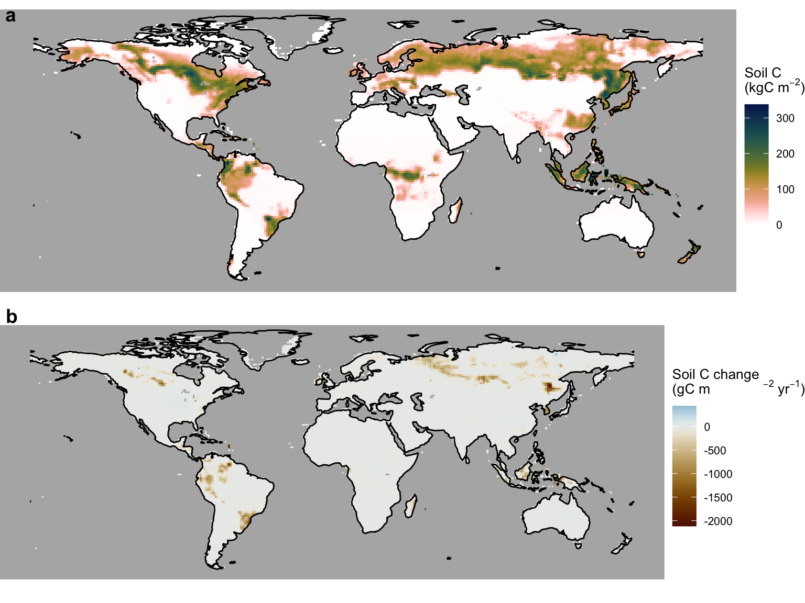
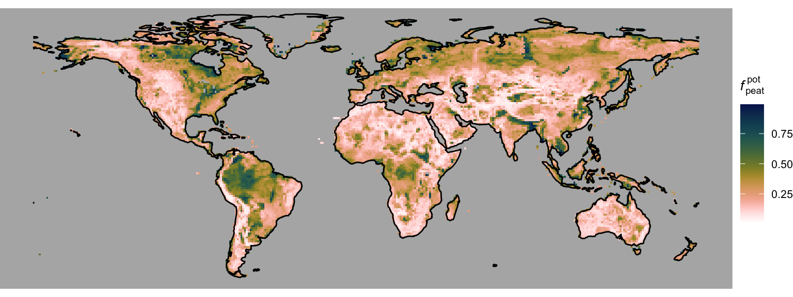

library(terra)
library(tidyterra)
library(ggplot2)
library(sf)
library(rnaturalearth)
library(rnaturalearthdata)
library(cowplot)
library(ggspatial)
library(dplyr)
library(tidyr)
library(purrr)
library(here)
library(khroma)
library(readr)
source(here::here("R/plot_discrete_cbar.R"))4 Global peatlands
The global distribution of peatlands is simulated in DYPTOP (as for wetlands) as the area fraction occupied by peatlands in each coarse-resolution gridcell - without explicitly considering the spatial pattern within gridcells.
4.1 Peatland criteria
In DYPTOP, the potential peatland area fraction is modelled as the simulated wetland area fraction. This potential area is attained if additional criteria are satisfied. Criteria relate to the hydroclimate and the C balance. Specifically, criteria that must be fulfilled are:
- Hydroclimate: A positive average ecosystem water balance: The ratio of mean annual precipitation over mean annual potential evapotranspiration is required to be greater than 1:
\[ P/\text{PET} > 1 \]
- Soil carbon: There must ba a long-term accumulation of C in the catothelm - the peat soil layer that remains water-logged. This criteria reflects the balance of vegetation productivity and litter production vs. the rate of decomposition of dead organic matter. The threshold chosen in DYPTOP is:
\[ \frac{dC_\text{peat}}{dt} > 10 \; \text{gCm}^{-2}\text{yr}^{-1} \]
- Soil carbon: If the C accumulation criterion is not fulfilled, a gridcell is still classified as peatland if the remaining C stored as soil organic matter in the catothelm is above a certain threshold, chosen as:
\[ C_\text{peat} > 50 \; \text{kgCm}^{-2} \]
Note that DYPTOP was implemented by Stocker, Spahni, and Joos (2014) within the LPX-Bern Dynamic Global Vegetation Model (DGVM). Vegetation processes and the carbon and water balances are simulated in DGVMs for each gridcell and separately for multiple tiles within each gridcell. This tiling structure is common for resolving sub-grid scale heterogeneity and distinct representations of processes and mass balances within different landscape elements. Commonly, land use classes are distinguished (e.g., croplands, pastures, urban land, non-agricultural land). Similarly, peatland processes and mass balances are treated separately and the peatland area fraction is represented by its own tile within gridcells.
4.1.1 Hydroclimate
Figure 4.1 shows the global distribution of P/PET. Here, we use data from Zomer, Xu, and Trabucco (2022). P/PET is sometimes (inappropriately) referred to as the aridity index. Let’s rather call it the moisture index.
Code
rasta_p_over_pet <- rast(here("data/aridityindex_p_over_pet_zomeretal2022_v3_yr_1x1deg.nc"))
# resample to the same grid as files above
# Load the target raster (the reference grid)
target_raster <- rast("~/dyptop_tutorial/data/params_topmodel_M8_C12_filled_1x1deg.nc")
# Regrid: Resample source raster to match the grid of the target raster
rasta_p_over_pet_regr <- resample(rasta_p_over_pet, target_raster, method = "bilinear") # Options: "bilinear", "near", "cubic"
# create meaningful breaks, see https://geco-bern.github.io/les/ecohydrology.html#sec-budyko
breaks <- c(0, 0.03, 0.1, 0.2, 0.3, 0.4, 0.5, 0.65, 0.8, 1, 1.2, 1.6, 2, 2.5, 3, Inf)
# bin values to get a discrete color scale (personal preference)
rasta_p_over_pet_bin <- rasta_p_over_pet
values(rasta_p_over_pet_bin) <- cut(
values(rasta_p_over_pet),
breaks = breaks,
right = FALSE
)
# get coast outlines
layer_coast <- rnaturalearth::ne_coastline(
scale = 110,
returnclass = "sf"
)
# get ocean layer
layer_ocean <- rnaturalearth::ne_download(
scale = 110,
type = "ocean",
category = "physical",
returnclass = "sf",
destdir = here::here("data/")
)Reading layer `ne_110m_ocean' from data source
`/Users/benjaminstocker/dyptop_tutorial/data/ne_110m_ocean.shp'
using driver `ESRI Shapefile'
Simple feature collection with 2 features and 3 fields
Geometry type: POLYGON
Dimension: XY
Bounding box: xmin: -180 ymin: -85.60904 xmax: 180 ymax: 90
Geodetic CRS: WGS 84Code
# construct map
ggmap <- ggplot() +
# aridity index raster
tidyterra::geom_spatraster(
data = rasta_p_over_pet_bin,
show.legend = FALSE
) +
# coastline
geom_sf(
data = layer_coast,
colour = 'black',
linewidth = 0.1
) +
# ocean to mask zeros
geom_sf(
data = layer_ocean,
color = NA,
fill = "azure3"
) +
# color palette from the khroma package
scale_fill_roma(discrete = TRUE, name = "") +
coord_sf(
ylim = c(-60, 85),
expand = FALSE # to draw map strictly bounded by the specified extent
) +
xlab('') +
ylab('') +
theme_bw() +
theme(axis.ticks.y.right = element_line(),
axis.ticks.x.top = element_line(),
panel.grid = element_blank(),
plot.background = element_rect(fill = "white")
)
gglegend <- plot_discrete_cbar(
breaks = breaks,
colors = c(khroma::color("roma")(length(breaks)-1)),
legend_title = "",
legend_direction = "vertical",
width = 0.03,
font_size = 3,
expand_size_y = 0.5,
spacing = "constant"
)
cowplot::plot_grid(ggmap, gglegend, ncol = 2, rel_widths = c(1, 0.10))4.1.2 Soil carbon
Let’s read outputs for the simulated soil C in the peatlands from the same global simulation with the LPX-Bern model, as used for Chapter 3.
# read water table depth outputs
# open raster
rasta_soilc <- rast(here("data/LPX-Bern_DYPTOP_vars_1990-2020_1x1deg_SOILC.nc"))
# extract data
df_soilc <- as.data.frame(rasta_soilc, xy = TRUE, na.rm = TRUE) |>
as_tibble()
# Data data is oddly organised in the NetCDF file. We therefore have to apply an
# additional step for re-organising it into a tidy format.
# Rename columns for clarity
colnames(df_soilc) <- c("lon", "lat", paste0("year_", 1990:2020))
# Convert from wide to long format (tidy)
df_soilc <- df_soilc |>
pivot_longer(cols = starts_with("year_"), names_to = "year", values_to = "soilc") |>
mutate(year = as.integer(gsub("year_", "", year))) # Extract yearFor determining the second criterion described above, we have to calculate the change rate of soil C over the 31 years. We do so by fitting a linear regression line and using its slope as a measure for the average change rate \(dC_\text{peat}/dt\). The third criterion is simply calculated by getting the mean for each gridcell.
get_changerate <- function(df){
linmod <- lm(soilc ~ year, data = df) # Fit linear model: value ~ time
coef(linmod)[2] # Extract slope (change rate)
}
get_mean <- function(df){
mean(df$soilc)
}
df_soilc_nested <- df_soilc |>
group_by(lon, lat) |>
nest() |>
mutate(
soilc_changerate = map_dbl(data, ~get_changerate(.)),
soilc_mean = map_dbl(data, ~get_mean(.))
) |>
select(-data) # to make object smaller againThe global pattern of peatland soil C mean and the rate of change are visualised below.
Code
# load global coastline data
world <- ne_coastline(scale = "small", returnclass = "sf")
# mean
soilc_mean <- ggplot() +
# Add elevation layer
geom_raster(
data = df_soilc_nested,
aes(x = lon, y = lat, fill = soilc_mean*1e-3),
show.legend = TRUE
) +
scale_fill_batlowW(reverse = TRUE, name = expression(paste("Soil C \n(kgC m"^-2, ")"))) + # Reverse the "lapaz" color scale
theme_void() +
theme(
legend.position = "right", # Position the legend at the bottom of the plot
legend.title = element_text(size = 10), # Adjust title font size
legend.text = element_text(size = 8), # Adjust legend text size
panel.background = element_rect(fill = "grey70", color = NA)
) +
coord_fixed() +
geom_sf(data = world, fill = NA, color = "black", size = 0.05) + # Continent outlines
ylim(-55, 80) +
xlim(-180, 180)
# changerate
soilc_changerate <- ggplot() +
# Add elevation layer
geom_raster(
data = df_soilc_nested,
aes(x = lon, y = lat, fill = soilc_changerate),
show.legend = TRUE
) +
scale_fill_vik(
name = expression(paste("Soil C change \n(gC m"^-2, " yr"^-1, ")")),
reverse = TRUE
) +
theme_void() +
theme(
legend.position = "right", # Position the legend at the bottom of the plot
legend.title = element_text(size = 10), # Adjust title font size
legend.text = element_text(size = 8), # Adjust legend text size
panel.background = element_rect(fill = "grey70", color = NA)
) +
coord_fixed() +
geom_sf(data = world, fill = NA, color = "black", size = 0.05) + # Continent outlines
ylim(-55, 80) +
xlim(-180, 180)
plot_grid(soilc_mean, soilc_changerate, ncol = 1, labels = c("a", "b"))
4.1.3 Combining criteria
Let’s combine the criteria following Stocker, Spahni, and Joos (2014), as illustrated by Figure 4.3.
This is implemented by the function get_peat_crit() as specified below.
# for creating labels
get_peat_crit_labels <- function(ai, soilc_changerate, soilc_mean){
ifelse(
ai > 1,
ifelse(
soilc_changerate > 10,
"C accumulation ok",
ifelse(
soilc_mean > 50000,
"C stock ok",
"C stock too low")
),
"too dry"
)
}
# for creating booleans
get_peat_crit <- function(ai, soilc_changerate, soilc_mean){
ifelse(
ai > 1,
ifelse(
soilc_changerate > 10,
TRUE,
ifelse(
soilc_mean > 50000,
TRUE,
FALSE)
),
FALSE
)
}Let’s combine the data frames containing soil C outputs and P/PET into a single data frame and apply get_peat_crit() for determining the global distribution of where peatlands could establish, given sufficient flooding (hence topography).
# merge data frame for potential peatland area fraction ...
df_combined <- df_soilc_nested |>
# ... and with P/PET
left_join(
as_tibble(rasta_p_over_pet_regr, xy = TRUE, na.rm = TRUE) |>
rename(lon = x, lat = y),
by = c("lon", "lat")
)
df_combined <- df_combined |>
mutate(
peat_crit_labels = get_peat_crit_labels(ai, soilc_changerate, soilc_mean),
peat_crit = get_peat_crit(ai, soilc_changerate, soilc_mean)
)From this, we can create a global map that visualises the dominant limiting factor, similar as Fig. 10 in Stocker, Spahni, and Joos (2014).
Code
gg <- ggplot() +
# Add elevation layer
geom_raster(
data = df_combined,
aes(x = lon, y = lat, fill = peat_crit_labels),
show.legend = TRUE
) +
theme_void() +
theme(
legend.position = "right", # Position the legend at the bottom of the plot
legend.title = element_text(size = 10), # Adjust title font size
legend.text = element_text(size = 8), # Adjust legend text size
panel.background = element_rect(fill = "grey70", color = NA)
) +
coord_fixed() +
geom_sf(data = world, fill = NA, color = "black", size = 0.05) + # Continent outlines
ylim(-55, 80) +
xlim(-180, 180) +
scale_fill_manual(
name = "",
values = c(
"too dry" = "wheat3",
"C accumulation ok" = "dodgerblue4",
"C stock ok" = "dodgerblue1",
"C stock too low" = "wheat4"
)
)
gg4.2 Potential peatland area
In DYPTOP, the history of monthly flooded area fractions \(\Psi(m)\) determines the potential peatland area fraction \(f_\text{peat}^\text{pot}\). The minimum of the 18 highest values \(\Psi(m)\) over the preceding 31 years is used to determine \(f_\text{peat}^\text{pot}\). In this tutorial, we don’t have access to monthly global model outputs for 31 years due to file storage limitations. Hence, for demonstration purposes, we use the 3rd highest monthly value of the flooded area fraction, calculated in Chapter 3 from a mean seasonal cycle of water table depth model outputs. Taking the 3rd highest value accounts for the requirement of a certain persistency of flooding. This yields the global distribution of the potential peatland area fraction, shown in Figure 4.5.
df_wtd_fflooded <- read_csv(here("data/df_wtd_fflooded.csv"))Rows: 192120 Columns: 9
── Column specification ────────────────────────────────────────────────────────
Delimiter: ","
dbl (9): lon, lat, month, wtd, K_PAR, XM_PAR, V_PAR, MAXF, fflooded
ℹ Use `spec()` to retrieve the full column specification for this data.
ℹ Specify the column types or set `show_col_types = FALSE` to quiet this message.take_third_highest <- function(vec){
rev(sort(vec))[3]
}
df_peat <- df_wtd_fflooded |>
group_by(lon, lat) |>
summarise(fpeat_pot = take_third_highest(fflooded), .groups = "drop")Code
# potential peatland area fraction
gg <- ggplot() +
# Add elevation layer
geom_raster(
data = df_peat,
aes(x = lon, y = lat, fill = fpeat_pot),
show.legend = TRUE
) +
scale_fill_batlowW(
reverse = TRUE,
name = expression(paste(italic("f")[peat]^"pot"))
) + # Reverse the "lapaz" color scale
theme_void() +
theme(
legend.position = "right", # Position the legend at the bottom of the plot
legend.title = element_text(size = 10), # Adjust title font size
legend.text = element_text(size = 8), # Adjust legend text size
panel.background = element_rect(fill = "grey70", color = NA)
) +
coord_fixed() +
geom_sf(data = world, fill = NA, color = "black", size = 0.05) + # Continent outlines
ylim(-55, 80) +
xlim(-180, 180)
gg
4.3 Actual peatland area fraction
To get from the potential to the actual peatland area fraction, we combine the peatland criteria (Section 4.1) and an additional temporal memory. DGVMs are dynamic models. That is, they simulate the temporal evolution of the terrestrial biosphere and landscape portions. The lateral expansion of peatlands cannot be assumed to be instantaneous. Therefore, the relative area change rate is assumed to be limited to 1% yr-1. This dynamic limitation is ignored in this tutorial since we are merely considering a mean seasonal cycle. Hence, let’s just combine the peatland criteria and \(f_\text{peat}^\text{pot}\) to get sort of a steady-state actual peatland area fraction, shown in Figure 4.6.
# merge data frame for potential peatland area fraction ...
df_combined2 <- df_combined |>
# ... with soil C outputs
left_join(
df_peat,
by = c("lon", "lat")
)
get_fpeat_act <- function(fpeat_pot, peat_crit){
ifelse(
peat_crit,
fpeat_pot,
0
)
}
df_combined2 <- df_combined2 |>
mutate(fpeat_act = get_fpeat_act(fpeat_pot, peat_crit))Code
# actual peatland area fraction
gg <- ggplot() +
# Add elevation layer
geom_raster(
data = df_combined2,
aes(x = lon, y = lat, fill = fpeat_act),
show.legend = TRUE
) +
scale_fill_batlowW(
reverse = TRUE,
name = expression(paste(italic("f")[peat]))
) + # Reverse the "lapaz" color scale
theme_void() +
theme(
legend.position = "right", # Position the legend at the bottom of the plot
legend.title = element_text(size = 10), # Adjust title font size
legend.text = element_text(size = 8), # Adjust legend text size
panel.background = element_rect(fill = "grey70", color = NA)
) +
coord_fixed() +
geom_sf(data = world, fill = NA, color = "black", size = 0.05) + # Continent outlines
ylim(-55, 80) +
xlim(-180, 180)
gg